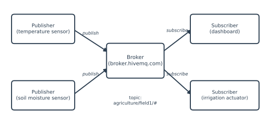
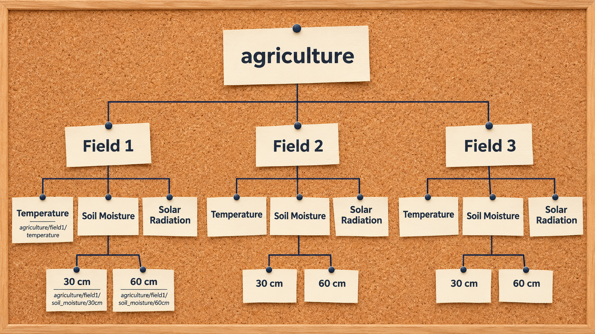

20 MQTT

20.1 Intro
MQTT (Message Queuing Telemetry Transport) is a lightweight publish/subscribe messaging protocol built for low-power devices like the ESP32. We’ll use it to move sensor and control data between our boards and the cloud.
20.2 Fundamental Concepts
- Broker: central hub that routes messages between clients. For class, we use the Hivemq free public broker.
- Client: anything that connects to the broker — a sensor, an actuator, or a dashboard. A client can publish, subscribe, or both. For testing, use the Hivemq online client.
- Topic: a hierarchical string label for a message (e.g.
agriculture/field1/soil_moisture). - Publish / Subscribe: a client publishes a message to a topic; the broker forwards it to every client that subscribed to that topic. Publishers and subscribers never talk to each other directly.

20.3 A bit more about topics
Think of the broker as a bulletin board. A topic is just the path to a spot on that board — levels separated by /, from general to specific. A publisher pins a note at a precise spot (e.g. agriculture/field2/soil_moisture/30cm); a subscriber reads whichever spot, or group of spots, it cares about.
Here’s that bulletin board for three fields, each tracking temperature, solar radiation, and soil moisture at two depths:

A subscriber can read as narrow or as wide a slice of this board as it needs:
- Just field 2’s temperature:
agriculture/field2/temperature - Soil moisture at 30 cm, in every field:
agriculture/+/soil_moisture/30cm— the+wildcard matches exactly one level, here standing in for the field. - Everything measured in field 1:
agriculture/field1/#— the#wildcard matches any number of remaining levels, so it catches both soil-moisture depths too. - Every soil-moisture reading, any field, any depth:
agriculture/+/soil_moisture/# - The entire board:
agriculture/#
Try it · Send a message
Which screens receive it?
Choose a topic and a message, then press Send. Each screen listens to the topic written on its card.
This demo runs only on this page. It sends nothing to a real broker. Changing a screen’s topic clears its received messages.
20.4 Let’s try it ourselves
I’ll suggest a few ideas, students will divide themselves in groups of 2, and they can choose what mini project to build:
- Upon a button press (digital read), one student’s ESP32 publishes via MQTT a command to “open” or “close”; the other ESP32 subscribes to that topic, and depending on what’s written, opens or closes a relay that powers an LED.
- One ESP32 measures temperature and humidity with an SHT31 and publishes the readings every 5 seconds; the other ESP32 subscribes and shows the measurements on an OLED screen.
- One ESP32 reads a potentiometer and publishes a 0–255 brightness value; the other subscribes and uses it to dim the built-in RGB LED.
- One ESP32 reads a light sensor (photoresistor) and publishes “day” or “night” whenever the light level crosses a threshold; the other subscribes and switches a relay — e.g. a grow light — accordingly.
- One ESP32 counts pulses with the pulse sensor and publishes the running count every few seconds; the other subscribes and displays the total on an OLED screen.
- One ESP32 reads a touch pin as a doorbell button and publishes a “ring” message; the other subscribes and flashes its RGB LED whenever a ring arrives.
20.5 LED subscribe
The ESP32 subscribes to a topic and turns an LED on pin A4 on or off based on the 1/0 it receives.
//addapted from:
//https://microcontrollerslab.com/esp32-mqtt-client-publish-subscribe-bme280-readings-hivemq/
#include <Arduino.h>
#include <WiFi.h>
#include <PubSubClient.h>
WiFiClient wifiClient;
PubSubClient mqttClient(wifiClient);
const char* ssid = "wifi_name";
const char* password = "wifi_password";
char *mqttServer = "broker.hivemq.com";
int mqttPort = 1883;
int LED_pin = A4;
String msgString; // Declare msgString variable in the global scope
void setupMQTT() {
mqttClient.setServer(mqttServer, mqttPort);
mqttClient.setCallback(callback);
}
void reconnect() {
Serial.println("Connecting to MQTT Broker...");
while (!mqttClient.connected()) {
Serial.println("Reconnecting to MQTT Broker..");
String clientId = "ESP32Client-";
clientId += String(random(0xffff), HEX);
if (mqttClient.connect(clientId.c_str())) {
Serial.println("Connected.");
// subscribe to topic
mqttClient.subscribe("agrotech/mqtt_tutorial/LED");
}
}
}
void setup() {
Serial.begin(115200);
WiFi.begin(ssid, password);
while (WiFi.status() != WL_CONNECTED) {
delay(500);
Serial.print(".");
}
Serial.println("");
Serial.println("Connected to Wi-Fi");
setupMQTT();
pinMode(LED_pin, OUTPUT);
digitalWrite(LED_pin, LOW);
}
void loop() {
if (!mqttClient.connected()) {
reconnect();
}
mqttClient.loop();
long now = millis();
}
void callback(char* topic, byte* message, unsigned int length) {
// Convert byte array to string
msgString = String((char*)message, length);
// Convert string to integer
int ledState = msgString.toInt();
Serial.print("Message: ");
Serial.println(msgString);
Serial.print("LED State: ");
Serial.println(ledState);
if (ledState == 1) {
digitalWrite(LED_pin, HIGH); // Set pin A4 high
} else if (ledState == 0) {
digitalWrite(LED_pin, LOW); // Set pin A4 low
}
}20.6 Publish text
The ESP32 publishes a fixed text message to a topic every 5 seconds.
Download code#include <Arduino.h>
#include <WiFi.h>
#include <PubSubClient.h>
WiFiClient wifiClient;
PubSubClient mqttClient(wifiClient);
const char* ssid = "wifi_name";
const char* password = "wifi_password";
const char* mqttServer = "broker.hivemq.com";
int mqttPort = 1883;
long previous_time = 0;
const char* messageToSend = "This is my fuuny message"; // Message as a variable
void setupMQTT() {
mqttClient.setServer(mqttServer, mqttPort);
}
void reconnect() {
Serial.println("Connecting to MQTT Broker...");
while (!mqttClient.connected()) {
Serial.println("Reconnecting to MQTT Broker..");
String clientId = "ESP32Client-";
clientId += String(random(0xffff), HEX);
if (mqttClient.connect(clientId.c_str())) {
Serial.println("Connected.");
}
}
}
void setup() {
Serial.begin(115200);
WiFi.begin(ssid, password);
while (WiFi.status() != WL_CONNECTED) {
delay(500);
Serial.print(".");
}
Serial.println("");
Serial.println("Connected to Wi-Fi");
setupMQTT();
}
void loop() {
if (!mqttClient.connected())
reconnect();
mqttClient.loop();
long now = millis();
if (now - previous_time > 5000) {
previous_time = now;
mqttClient.publish("agrotech/mqtt_tutorial/message", messageToSend);
}
}20.7 Sensor subscribe
The ESP32 subscribes to a topic and prints each incoming reading to the Serial monitor as a float.
Download code//addapted from:
//https://microcontrollerslab.com/esp32-mqtt-client-publish-subscribe-bme280-readings-hivemq/
#include <Arduino.h>
#include <WiFi.h>
#include <PubSubClient.h>
WiFiClient wifiClient;
PubSubClient mqttClient(wifiClient);
const char* ssid = "wifi_name";
const char* password = "wifi_password";
char *mqttServer = "broker.hivemq.com";
int mqttPort = 1883;
float value = 0;
String msgString; // Declare msgString variable in the global scope
void setupMQTT() {
mqttClient.setServer(mqttServer, mqttPort);
mqttClient.setCallback(callback);
}
void reconnect() {
Serial.println("Connecting to MQTT Broker...");
while (!mqttClient.connected()) {
Serial.println("Reconnecting to MQTT Broker..");
String clientId = "ESP32Client-";
clientId += String(random(0xffff), HEX);
if (mqttClient.connect(clientId.c_str())) {
Serial.println("Connected.");
// subscribe to topic
mqttClient.subscribe("agrotech/mqtt_tutorial/temperature");
}
}
}
void setup() {
Serial.begin(115200);
WiFi.begin(ssid, password);
while (WiFi.status() != WL_CONNECTED) {
delay(500);
Serial.print(".");
}
Serial.println("");
Serial.println("Connected to Wi-Fi");
setupMQTT();
}
void loop() {
if (!mqttClient.connected()) {
reconnect();
}
mqttClient.loop();
long now = millis();
}
void callback(char* topic, byte* message, unsigned int length) {
// Convert byte array to string
msgString = String((char*)message, length);
// Convert string to float
value = msgString.toFloat();
Serial.println(value);
}20.8 Publish and subscribe
The ESP32 publishes a random “temperature” reading and a text message once per second, while also subscribing to and printing any message sent back to it.
Download code//addapted from:
//https://microcontrollerslab.com/esp32-mqtt-client-publish-subscribe-bme280-readings-hivemq/
#include <Arduino.h>
#include <WiFi.h>
#include <PubSubClient.h>
WiFiClient wifiClient;
PubSubClient mqttClient(wifiClient);
const char* ssid = "TP-Link_905D";
const char* password = "33072036";
char *mqttServer = "broker.hivemq.com";
int mqttPort = 1883;
long previous_time = 0;
String msgString; // Declare msgString variable in the global scope
void setupMQTT() {
mqttClient.setServer(mqttServer, mqttPort);
mqttClient.setCallback(callback);
}
void reconnect() {
Serial.println("Connecting to MQTT Broker...");
while (!mqttClient.connected()) {
Serial.println("Reconnecting to MQTT Broker..");
String clientId = "ESP32Client-";
clientId += String(random(0xffff), HEX);
if (mqttClient.connect(clientId.c_str())) {
Serial.println("Connected.");
// subscribe to topic
mqttClient.subscribe("agrotech/2023/message");
}
}
}
void setup() {
Serial.begin(115200);
WiFi.begin(ssid, password);
while (WiFi.status() != WL_CONNECTED) {
delay(500);
Serial.print(".");
}
Serial.println("");
Serial.println("Connected to Wi-Fi");
setupMQTT();
}
void loop() {
if (!mqttClient.connected())
reconnect();
mqttClient.loop();
long now = millis();
if (now - previous_time > 1000) {
previous_time = now;
float temperature = random(1, 101);
char tempString[8];
dtostrf(temperature, 1, 2, tempString);
Serial.print("Temperature: ");
Serial.println(tempString);
mqttClient.publish("agrotech/2023/temperature", tempString);
mqttClient.publish("agrotech/2023/string", "Hi :)");
// Serial.print("Subscribed Message: ");
// Serial.println(msgString);
}
}
void callback(char* topic, byte* message, unsigned int length) {
// Convert byte array to string
// String msgString((char*)message, length);
msgString = String((char*)message, length);
// Convert string to float
float msgFloat = msgString.toFloat();
// Convert string to integer
int msgInt = msgString.toInt();
Serial.print("Message: ");
Serial.println(msgString);
Serial.print("Float: ");
Serial.println(msgFloat);
Serial.print("Integer: ");
Serial.println(msgInt);
}20.9 MQTT + Python
20.10 Subscribe
A Python script subscribes to all sub-topics under agrotech/mqtt_tutorial/ and prints every message it receives.
import paho.mqtt.client as mqtt
# MQTT broker details
broker_address = "broker.hivemq.com"
broker_port = 1883
# Callback function when a connection is established with the MQTT broker
def on_connect(client, userdata, flags, rc):
print("Connected to MQTT broker with result code: " + str(rc))
# Subscribe to the topic upon successful connection
client.subscribe("agrotech/mqtt_tutorial/#")
# Callback function when a message is received
def on_message(client, userdata, msg):
print("Received message: " + str(msg.payload.decode()))
# Create a MQTT client instance
client = mqtt.Client()
# Assign callback functions
client.on_connect = on_connect
client.on_message = on_message
# Connect to the MQTT broker
client.connect(broker_address, broker_port, 60)
# Loop to maintain the connection and process network traffic
client.loop_forever()20.11 Publish
A Python script publishes a slowly drifting simulated temperature value once per second.
Download codeimport paho.mqtt.client as mqtt
import random
import time
# MQTT broker details
broker_address = "broker.hivemq.com"
broker_port = 1883
# Create a MQTT client instance
client = mqtt.Client()
# Connect to the MQTT broker
client.connect(broker_address, broker_port, 60)
temperature = 20.0
# Loop to publish random temperature readings
while True:
temperature = temperature + random.uniform(-1, 1) # Generate a random temperature value between 20.0 and 30.0
client.publish("agrotech/mqtt_tutorial/temperature", str(temperature)) # Publish the temperature value to the topic
print("Published temperature: " + str(temperature))
time.sleep(1) # Wait for 5 seconds before publishing the next temperature reading
# Disconnect from the MQTT broker (not reached in this example)
client.disconnect()20.12 Subscribe to CSV
A Python script subscribes to all incoming sensor topics and saves every message, with a timestamp, to a CSV file.
Download codeimport paho.mqtt.client as mqtt
import pandas as pd
from datetime import datetime
# MQTT broker details
broker_address = "broker.hivemq.com"
broker_port = 1883
# Create a DataFrame to store the messages
df = pd.DataFrame(columns=["topic", "value"])
# Callback function when a connection is established with the MQTT broker
def on_connect(client, userdata, flags, rc):
print("Connected to MQTT broker with result code: " + str(rc))
# Subscribe to all subtopics within agrotech/mqtt_tutorial/
client.subscribe("agrotech/mqtt_tutorial/#")
# Callback function when a message is received
def on_message(client, userdata, msg):
global df
# Decode the message payload
value = msg.payload.decode()
# Extract the subtopic
subtopic = msg.topic.split("agrotech/mqtt_tutorial/")[1]
# Get the current time
timestamp = datetime.now()
# Create a new DataFrame with the new message
new_row = pd.DataFrame({"topic": [subtopic], "value": [value]}, index=[timestamp])
# Append the new row to the DataFrame using concat
df = pd.concat([df, new_row])
print(f"Received message on {msg.topic}: {value}")
# Create an MQTT client instance
client = mqtt.Client()
# Assign callback functions
client.on_connect = on_connect
client.on_message = on_message
# Connect to the MQTT broker
client.connect(broker_address, broker_port, 60)
# Loop to maintain the connection and process network traffic
try:
client.loop_forever()
except KeyboardInterrupt:
# Save the DataFrame to a CSV file when the script is interrupted
df.to_csv("mqtt_messages.csv")
print("Data saved to mqtt_messages.csv")20.13 Control irrigation solenoid in the greenhouse
Use the code below to control the irrigation solenoid outside the greenhouse.
Code usage: connect a jumper to A4. Whenever you touch the jumper, the solenoid will be open, otherwise it will be closed.
The ESP32 publishes 1 or 0 to a topic based on whether pin A4 is touched, toggling the greenhouse’s irrigation solenoid through Home Assistant.
#include <WiFi.h>
#include <PubSubClient.h>
// WiFi credentials
const char* ssid = "agrotech"; // Replace with your WiFi SSID
const char* password = "1Afuna2gezer"; // Replace with your WiFi Password
// MQTT broker details
const char* mqtt_server = "192.168.0.102"; // IP address of Home Assistant
const int mqtt_port = 1883; // Default MQTT port
const char* mqtt_user = "mqtt-user"; // MQTT username
const char* mqtt_password = "1234"; // MQTT password
const char* mqtt_topic = "/greenhouse/outside/irrigation/solenoid5"; // MQTT topic
// Touch pin configuration
#define TOUCH_PIN A4 // Use GPIO 4 as touch pin (T0 on ESP32)
// MQTT client and WiFi client
WiFiClient espClient;
PubSubClient client(espClient);
// State variable to track touch pin state
bool send_message = false;
void setup_wifi() {
Serial.print("Connecting to WiFi: ");
Serial.println(ssid);
WiFi.begin(ssid, password);
while (WiFi.status() != WL_CONNECTED) {
delay(500);
Serial.print(".");
}
Serial.println("\nWiFi connected");
Serial.print("IP address: ");
Serial.println(WiFi.localIP());
}
void reconnect() {
// Attempt to reconnect to the MQTT broker
while (!client.connected()) {
Serial.print("Attempting MQTT connection...");
if (client.connect("ESP32Client", mqtt_user, mqtt_password)) {
Serial.println("connected");
} else {
Serial.print("failed, rc=");
Serial.print(client.state());
Serial.println(" Retrying in 5 seconds...");
delay(5000);
}
}
}
void setup() {
Serial.begin(115200);
// Initialize WiFi
setup_wifi();
// Set up MQTT
client.setServer(mqtt_server, mqtt_port);
// Ensure the ESP32 starts connected to the MQTT broker
reconnect();
}
void loop() {
if (!client.connected()) {
reconnect();
}
client.loop();
// Read the state of the touch pin
bool is_touched = touchRead(TOUCH_PIN) < 40; // If the value is less than 40, the pin is being touched
// Send "1" if the pin is being touched
if (is_touched) {
if (!send_message) {
client.publish(mqtt_topic, "1");
Serial.println("Sent: 1");
send_message = true; // Set flag to avoid sending multiple times while touching
}
}
// Send "0" if the pin is not being touched
else {
if (send_message) {
client.publish(mqtt_topic, "0");
Serial.println("Sent: 0");
send_message = false; // Reset the flag when pin is no longer touched
}
}
// Optional: Small delay to avoid flooding the MQTT server with messages
delay(100); // Adjust the delay if necessary
}